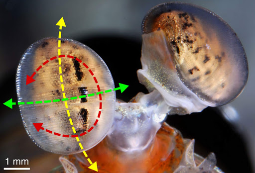
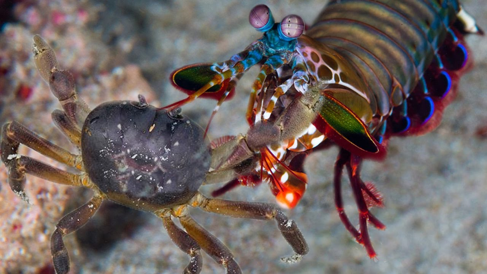

Fatos sobre o Stomatopoda:
O Rocky Balboa dos mares
Camarão mantis, camarão louva-a-Deus, camarão boxeador, camarão pistola, camarão de estalo, lacraia-do-mar e tamarutaca são alguns dos nomes comuns para o crustáceo marinho (muito parecido com um camarão, mas não é um camarão!) pertencente à ordem Stomatopoda.
Características
Os estomatópodes são predadores ativos que caçam presas com o auxílio de um sentido de visão muito apurado e capaz de interpretar polarização no espectro ultravioleta e infravermelho). Apresentam uma grande variação de tamanho, que pode ir de poucos milímetros até aproximadamente 40 cm nas espécies maiores. Eles vivem em fundo consolidado, lodoso ou ainda arenoso, onde cavam seus buracos ou aproveitam-se dos orifícios deixados por outros animais para neles se instalar. São animais exclusivamente carnívoros, alimentando-se de camarões, caranguejos, moluscos, peixes e até mesmo outros da mesma ordem. O segundo par de patas, muito desenvolvido, é usado tanto para atacar a presa como para se defender. O urópodo, quando aberto, também funciona para defesa, como um escudo, fechando a galeria em que o animal esteja instalado. A fêmea desova no local onde se abriga e, em caso de perigo, enrola os ovos como uma bola, prendendo-os junto ao corpo até encontrar um abrigo mais protegido.

Visão
Esses animais possuem o mais complexo sistema de visão de cores do mundo animal, pois enxergam 12 cores primárias, correspondentes aos 12 pigmentos distintos presentes em sua retina. Nossos olhos possuem três tipos desses receptores - que correspondem à luz azul, verde e vermelha -, que nos permitem perceber o espectro de cores que vemos. Os cães contam com apenas dois tipos de cones (verde e azul), e é por isso que eles vêm tons de azul, verde e um pouco de amarelo. Muitos anfíbios, répteis, aves e insetos possuem quatro tipo de cones, o que significa que espécies dessas classes conseguem ver cores que o nosso cérebro é incapaz de processar. Algumas espécies específicas de borboletas e possivelmente pombos possuem cinco cones de percepção de cor, o que aumenta ainda mais a quantidade de pigmentos que eles são capazes de perceber. O sistema de visão dos estomatópodes possui doze cones sensíveis à luz e outros quatro que filtram a luz (16 cones no total), o que lhes permite ver cores polarizadas e imagens multiespectrais.
Como cada cone pode ver cerca de 100 cores, os estomatópodes são capazes de ver 1024 cores, ou seja, 1 septilhão de cores. Em comparação, o olho humano vê 106 cores, ou seja, 1 milhão de cores apenas. A visão dos estomatópodes é sensível à luz ultravioleta, mas ainda é desconhecido se ela pode distinguir a luz infravermelha.
Predador
Excelente golpeador, o tamarutaca "soca" suas presas com suas garras com uma força de até 2,5 mil vezes seu peso em menos de 800 microsegundos. Este nocaute equivale a um tiro de pistola calibre 22 (equivalente a 720km/h) e tem uma força de impacto de 60 kg/cm. Essa força esmagadora é a responsável pelo seu título de "lagosta-boxeadora" e é capaz de facilmente quebrar a carapaça de um caranguejo, as conchas duras e calcificadas de gastrópodes ou até mesmo quebrar o vidro reforçado de um aquário. Eles podem ser encontrados em quase todo o litoral brasileiro, mas não são animais fáceis de se observar pelos seus hábitos mais furtivos. Devem ser manuseados com muita cautela pois são animais preparados para se defender com força, caso sejam incomodados.
